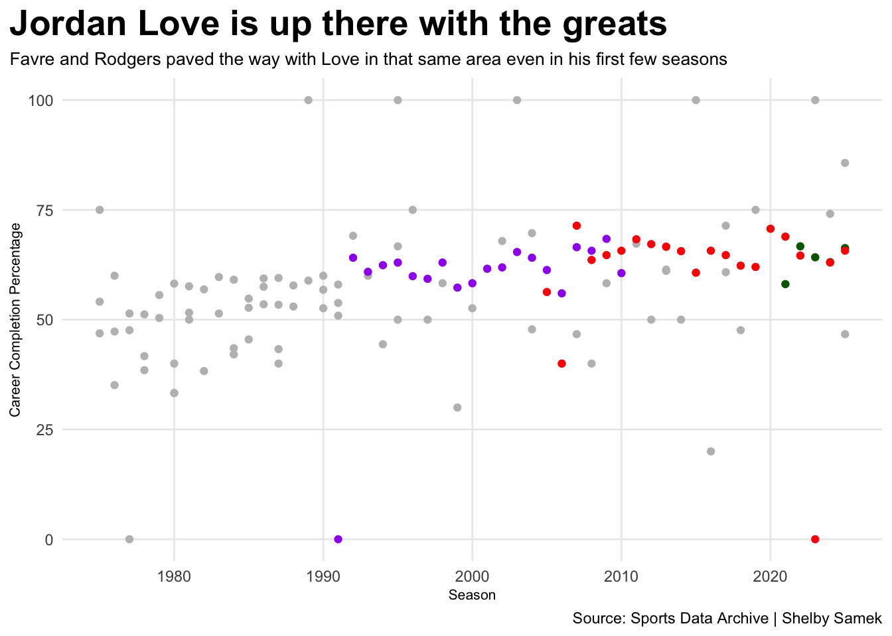

How Jordan Love compares to previous Packers’ quarterbacks
Author
Shelby Samek
Published
November 13, 2026
Jordan Love, Christian Watson and Matthew Golden have been a triple threat so far in the 2026 NFL season. These three have been breaking records left and right. Some are comparing Love and Watson to Aaron Rodgers and Davante Adams at their peak. Love individually has broken and matched a few records on his own. The question is, how does he compare to Brett Favre and Rodgers?
Code
library(tidyverse)
── Attaching core tidyverse packages ──────────────────────── tidyverse 2.0.0 ──
✔ dplyr 1.2.1 ✔ readr 2.2.0
✔ forcats 1.0.1 ✔ stringr 1.6.0
✔ ggplot2 4.0.3 ✔ tibble 3.3.1
✔ lubridate 1.9.5 ✔ tidyr 1.3.2
✔ purrr 1.2.2
── Conflicts ────────────────────────────────────────── tidyverse_conflicts() ──
✖ dplyr::filter() masks stats::filter()
✖ dplyr::lag() masks stats::lag()
ℹ Use the conflicted package (<http://conflicted.r-lib.org/>) to force all conflicts to become errors
ggplot() +geom_bar(data=love_career, aes(x=Season, weight=PassingYds)) +coord_flip() +labs(x="Season - Jordan Love", y="Total Passing Yards", title="Jordan Love proved to be explosive early on", subtitle="Love is sitting pretty similarly to previous Green Bay starting quarterbacks at this point in his career", caption="Source: Sports Data Archive | Shelby Samek" ) +theme_minimal() +theme(plot.title =element_text(size =20, face ="bold"),axis.title =element_text(size =8), plot.subtitle =element_text(size=10), panel.grid.minor =element_blank(),plot.title.position ="plot" )
Love had his best season in 2023 throwing over 4,000 yards. The ranking is pretty similar to where Rodgers was in his first year as starting quarterback with Favre sitting a little lower above the 3,000 yard line. Where were Favre and Rodgers when they were in the same spot as Love? Where are they now? Is Love exceeding in some areas, falling back in others, on the right track? Etc.
Code
ggplot() +geom_point(data=gb, aes(x=Season, y=`Cmp%`), color="grey") +geom_point(data=love_career, aes(x=Season, y=`Cmp%`), color="darkgreen") +geom_point(data=rodgers_career, aes(x=Season, y=`Cmp%`), color="red") +geom_point(data=favre_career, aes(x=Season, y=`Cmp%`), color="purple") +labs(x="Season", y="Career Completion Percentage", title="Jordan Love is up there with the greats", subtitle="Favre and Rodgers paved the way with Love in that same area even in his first few seasons", caption="Source: Sports Data Archive | Shelby Samek" ) +theme_minimal() +theme(plot.title =element_text(size =20, face ="bold"),axis.title =element_text(size =8), plot.subtitle =element_text(size=10), panel.grid.minor =element_blank(),plot.title.position ="plot" )

Love, Rodgers and Favre have impressive football resumes early on in their careers. The only thing missing is Love’s ring. Love is in his seventh season in the NFL and fourth season as Green Bay’s starting quarterback. Favre took the Packers to Super Bowl XXXI in 1996 during his fifth season in the NFL, fourth season as Green Bay’s starting quarterback, followed by Super Bowl XXXII in 1997. Rodgers took the Packers to Super Bowl XLV in 2010 during his sixth season in the NFL, third season as Green Bay’s starting quarterback, going on to win Super Bowl MVP. Playoffs are how teams get to the Super Bowl. It is crunch time. The packers have a recent history of choking early on. What can Jordan Love do to get out of that slump?